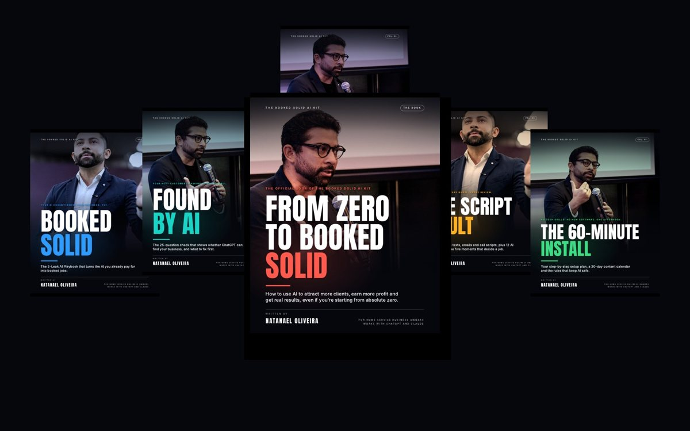

For local businesses, professionals and service providers
From Zero to
Booked Solid
How to use AI to attract more clients, earn more profit and get real results, even if you're starting from absolute zero.
One 105-page book and six practical playbooks that turn the ChatGPT or Claude you already have into a system for getting found, answering fast and winning clients back. Copy, paste, done.

- 7 PDFs
- 328 pages
- 47 scripts
- 20 AI prompts
- Instant download
One payment of $7. No subscription. No new software to buy.
Read this first
Right now, someone near you needs exactly what you sell
They typed it into their phone a few minutes ago. Maybe into Google. Increasingly, into ChatGPT.
"Who is a good plumber near me?" "Which dentist takes new patients this week?" "Who can fix this before Friday?"
Somebody got that call. Somebody got named. Somebody answered in four minutes while the others were busy with a customer, a job site or a Tuesday.
The business that wins is rarely the best one. It is the one that was found, answered first and followed up.
If that sounds unfair, it is. But it is also good news. Finding, answering and following up are not talent. They are a system. And in 2026, you can build that system with an AI assistant you probably already have open in a browser tab.
You don't have a lead problem. You have a leak problem.
Most owners react to a slow month by chasing more leads: more ads, more posts, more networking. It feels productive. It is usually the most expensive way to fix the wrong thing.
Look at the clients who already reached you. How many asked for a quote and never heard back from you again? How many messages sat unanswered over a weekend? How many happy clients never left a review? How many past clients have not heard from you in a year?
Every one of those is money you already paid to earn, and then dropped on the floor.
The kit is built around five leaks. Fix them in order and the same amount of attention starts producing more booked work.
- 1They can't find you
When people ask AI who to hire, your business never comes up. You run the 25-question check, see exactly why, and fix what keeps you invisible.
- 2You answer too late
The first reply usually wins the job. You get ready-made replies for texts, forms, missed calls and after-hours messages, in a voice that sounds like you.
- 3The quote goes cold
Quotes, proposals and treatment plans go silent because following up feels pushy. A short copy-and-paste sequence brings them back without pressure.
- 4No review gets left
Happy clients stay quiet unless you ask the right way, at the right moment. You get simple asks that do not feel awkward.
- 5They forget you exist
Past clients are the easiest work you will ever win, and the least contacted. You get simple wake-up messages for people who already chose you once.
Why "just use ChatGPT" hasn't worked
Maybe you have already tried it. You typed "write me a marketing post," got something generic, and closed the tab.
That is not your fault, and it is not the AI's. It is a briefing problem. AI does not know your services, your prices, your service area, your tone, or what you will never say to a client. So it guesses, and guesses sound like everybody else.
AI is only as good as what it knows about your business. Teach it once, and everything it writes gets sharper.
That is the heart of this kit. Before you copy a single script, you build your Business Brain: one page that teaches AI who you are, what you sell, who you serve and how you talk. Every prompt in the kit plugs into it. The result is messages that sound like you wrote them on your best day.
Meet The Booked Solid AI Kit
A complete, practical system in seven PDFs. You do not need to be technical. You do not need new software. If you can text and copy-paste, you can use every page of it.
- Get found. Run the 25-question visibility check and see what AI says about you today.
- Teach AI your business. Fill in the workbook once and stop starting from scratch.
- Answer in minutes. Use scripts for texts, emails, voicemails and missed calls.
- Rescue silent quotes. Follow up without sounding desperate or pushy.
- Collect reviews and repeat work. Turn finished jobs into proof and past clients into next month's schedule.
- Install it in about 60 minutes. Follow a step-by-step plan instead of guessing what to do first.
Everything you get today
328 pages in total. 47 scripts. 20 AI prompts. Instant access after checkout.
A closer look inside
THE BOOK
From Zero to Booked Solid
The part that ties everything together. It is written like a book, with stories and real situations, so you understand why each move works and not just what to copy.
- How AI actually changes how clients choose who to hire
- The 5-Leak method, one leak at a time, in the order that pays fastest
- Practical examples you can adapt to your own business this week
VOL. 02
Found by AI
Stop guessing whether AI recommends you. Check it, then fix it.
- 25 questions that reveal whether AI can find and name your business
- What to fix first so you stop being invisible
VOL. 03
The Business Brain
The fill-in workbook that makes every other tool in the kit sound like you.
- Your services, your ideal client, your area, your tone and your rules in one place
- About fifteen minutes to fill in, then you reuse it every time
VOL. 04
The Script Vault
The fastest volume to put to work. Open, copy, paste, send.
- Texts, emails, voicemails and call scripts for the moments that decide a job
- Follow-up sequences for quotes that went quiet
- Review requests and wake-up messages for past clients
VOL. 05
The 60-Minute Install
Reading is not setup. This volume is the plan that gets it running.
- A step-by-step setup you can finish in about an hour
- A simple routine of a few minutes a day after that
VOL. 01 AND VOL. 06
Booked Solid and The Local Pro Playbook
Volume 01 is the compact 5-Leak playbook for quick reference. Volume 06 translates the whole method for practices, firms, studios and shops.
- Scripts for patients, clients and regulars, not just job-site customers
- A page of rules to load into AI so it stays inside the lines of your profession
Up and running in three steps
- Teach AI your business
Fill in the Business Brain. About fifteen minutes. You only do this once.
- Plug in the scripts
Pick the leak that costs you the most right now and copy the matching scripts from the vault.
- Follow the 60-minute plan
Volume 05 walks you through the setup in order, so you are not left guessing what comes next.
Written for your kind of business

Volume 06 translates every leak into your vocabulary, with scripts for patients, clients and regulars, and a page of rules to load so AI stays inside the lines of your profession.
This kit is for you if...
- You own or run a local business and your calendar is not as full as it should be
- You are good at the work and tired of being bad at the "getting clients" part
- You get quote requests, calls or messages that you answer late or not at all
- You want to use AI but don't know what to say to it
- You want practical scripts and a plan, not theory
It is not for you if...
- You want a magic button that brings clients without any effort on your side
- You are looking for advanced coding or automation tools. This kit uses plain ChatGPT or Claude
- You are not willing to spend about an hour on setup
About the author
I'm Natanael Oliveira. I have spent more than 15 years in digital marketing and direct-response copywriting, and I'm the author of more than 20 books. I work with businesses in the US and Brazil, and I wrote this kit for one reason: the owners I meet are excellent at what they do, and they lose clients in the same five places.
None of those leaks needs a bigger budget. They need a system that is simple enough to actually use. That is what is inside.
The math is simple
What is one new client worth to your business? $150? $500? $5,000?
The kit costs $7.
If it helps you answer one lead you would have missed, rescue one quote that went silent, or bring back one past client, it has paid for itself many times over. There is no guarantee that will happen for you, because results depend on your market, your offer and how you apply the system. But the price of finding out is less than a coffee.
Compare that to the usual alternatives: a freelancer to write your follow-ups, a consultant to set up your messages, or hours of trial and error with a blank AI chat window.
Common questions
- Do I need to be good with tech?
- No. If you can text, you can do this. You copy, paste and fill in the blanks.
- Do I need to buy software?
- No. It works with the ChatGPT or Claude you already have, including the free versions.
- I tried AI before and the results were generic. Will this be different?
- Yes, and that is the point of the Business Brain. Once AI knows your services, your area and your voice, the same tool writes messages that sound like you instead of like everyone else.
- Is this only for plumbers and contractors?
- No. The main method works for any local service business, and Volume 06 is written for practices, firms, studios and shops.
- How long does it take to set up?
- Volume 05 walks you through the first setup in about 60 minutes. After that it takes a few minutes a day.
- How do I get it?
- You get access to the PDFs right after checkout. Open them on your phone or computer.
- Is it a subscription?
- No. It is one payment of $7.
- Is payment secure?
- Yes. Checkout is handled by Stripe. You can pay with a card, Apple Pay or Google Pay.
The Booked Solid AI Kit
Stop losing the clients you already earned
$7
The book and all six volumes. 328 pages. One payment. Instant access.
Get Instant Access for $7Secure checkout by Stripe. Card, Apple Pay and Google Pay.
P.S. The next time someone asks AI who to hire, either your business is in the answer or it isn't. Every week you wait is another week of messages answered late, quotes gone cold and past clients who forgot your name. The fix starts with one hour and a $7 download.
This is an educational product. Results depend on your market, your offer and how you apply the system. No income or results are guaranteed. Copyright 2026 Natanael Oliveira.